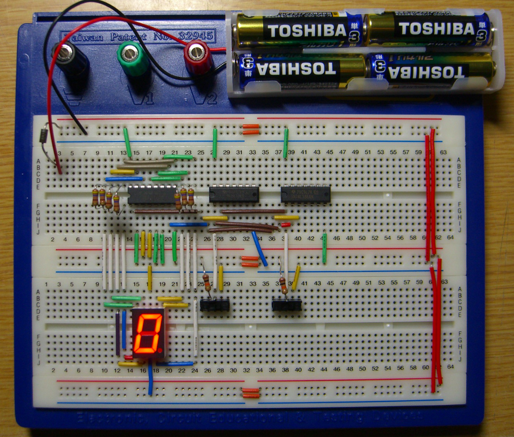
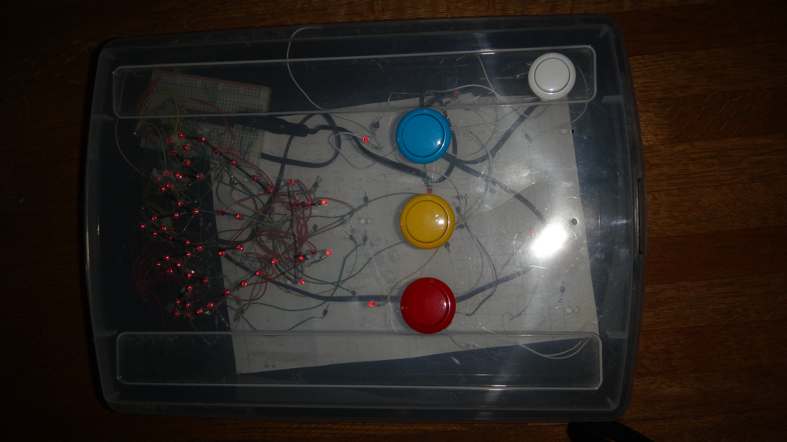
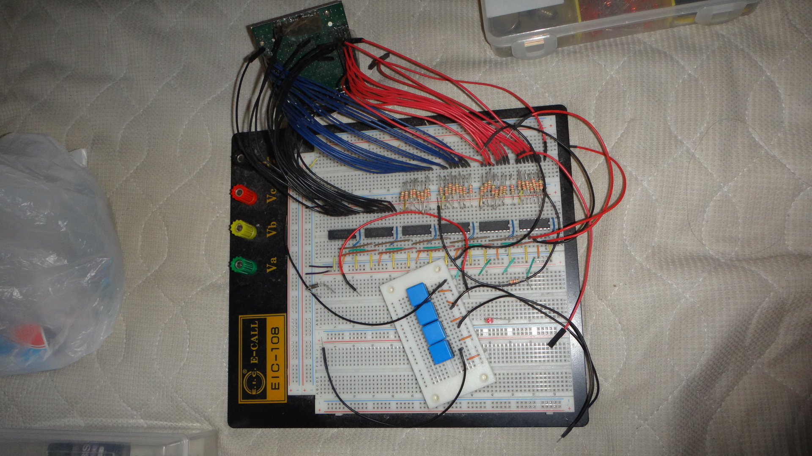
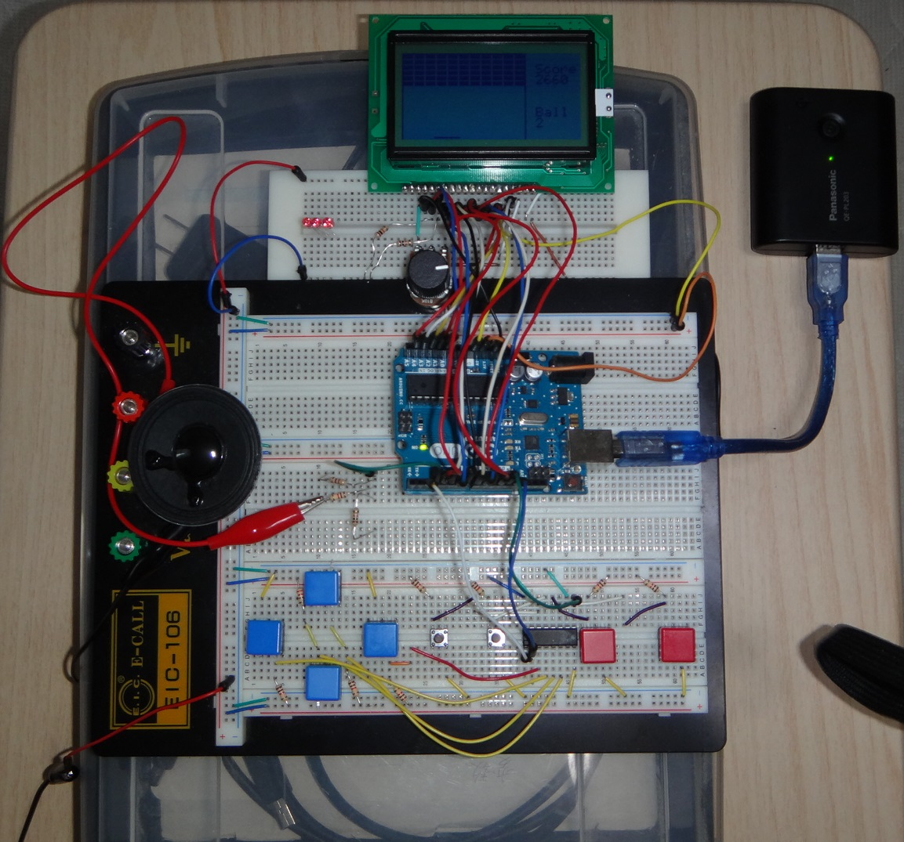

電子回路
いつごろに電子工作をはじめたか, またそのきっかけは。
電子工作については, 小学校5年生の頃からやっています。きっかけは, ちょうどその頃に電子ブロックという電気の実験キットみたいなものを買って貰った事がきっかけでした。
この実験キットは一つ一つのブロックの中に電子部品が組み込まれており, そのブロックを繋げることで簡単に回路が組め, ラジオなどの原理も知ることが出来るという, 正に知的好奇心をくすぐる非常に面白いものでした。 そのため, この実験キットで組める50の回路はすぐに実験して飽きてしまったため, もっと自由に回路が組めるようになりたいと思い, それが徐々に本格的な電子回路の組み方について学ぶことへと繋がりました。
どのようなものを作ったか。
4ビット加算器
- 
- 出典:
ブレッドボード利用による1ビット加算器
当時の作品写真がなかったため, 引用します。
許可の旨の記述あり
初めて本格的な工作を作ったのは小学校6年生の時で, 4ビット加算器というものを作りました。 4ビット加算器は論理演算(AND,OR,NOT,XOR)などの回路を用いて作った, 15+15までの加算しかできない加算器ですが, 大きさは大学ノート2冊分もの大きさになりました。
では, なぜこのようなものを作ったのかというと, それはやはり知的好奇心からなるものでした。 当時僕はプログラミングも同時進行でやっており, よくゲームを作ったりしていたのですが, その時によく利用していたAND,OR,NOTといった論理演算についての回路図をたまたまインターネットで見つけ, さらにはそこから足し算や引き算を行うことができるという, コンピューターの演算装置(ALＵ)の原理的なものを発見したことに感動したことがきっかけの1つです。
またさらに, 電子回路の方では, ブレッドボードなるものを入手し, それの実験キットでさまざまな専門書を読みあさって得た知識を使い回路の実験をしていた際, LSI(IC,集積回路のこと)の中に74LS04とかいう型番の論理演算ANDを電気的にHiとLowで出力するICがあることを知って, さらには実験によりデータシートを参照して使いこなせるようになったこと, などといった要因が見事に合致し, ちょうど時期は小6の夏休み, 一念発起して当時の僕ははりきって作ったのであります。
じゃんけんゲームマシン
- 
- ↑これが中1のときに作った作品「じゃんけんゲームマシン」
次に作った物はじゃんけんゲームマシンで中学校1年生のときに夏休みの工作として出展しました。 このゲーム機はよくゲームセンターにおいてあるじゃんけんマシンと同じようなもので, プレイヤーがグー,チョキ,パーの3つのボタンからどれか1つのボタンを押すと, コンピューターがそれに応じてじゃんけんをしてくれるというものです。このゲーム機を製作するにあたっては, プログラミングよりも多くのLEDを表示させることに苦労しました。詳しく述べると，トランジスタなどの特性を上手く利用して，多くのLEDを表示できるようにする必要があるのですが，やはり中学性の僕には，なかなか骨の折れる作業だったのであります。
また, この頃から, 電子回路の知識だけではなく, プログラミングの技術を利用したマイコンも利用できるようになりました。そのため電子工作の幅が広がり, いままで夢見てきたゲーム機製作とそのソフト作りといったようなものまであと一歩といったところまでいきました。
ISE GAME MACHINE I
- 
- ↑これが中2のときに作った作品「ISE GAME MACHINE」
こうして次に作った作品がISE GAME MACHINEです。この作品は16×16のマトリクスLEDディスプレイを出力としており, 電車の車内にある電光掲示板のような表示が出来るようになりました。 また, ゲーム機とソフトはそれぞれ別のブロックで制御しているので, ソフトのプログラムを入れ替えることにより, 別のゲームを同じゲーム機で行なえるようになりました。
【余談1】余談として，マトリクスLED制御の技術的な面について補足しておきましょう。マトリクスLEDは，16×16の表示となっているので，単純に考えるならば，16×16=256ものピン制御が必要となってきます。しかしながら，現実的にそれほどのピンを直接的に制御できるようなCPUはほとんどありません。そこで，テレビなどでも使われている技術である，ダイナミック点灯(用語集を参照)という技術を使用することで，実質的な制御ピン本数を16+16=32にまで抑えることができました。
【余談2】さて，これでピン数32に抑えることができましたが，実はそれでもピン数が足りません。どうしましょう……。そこで，登場するのが，74HC595などの8ビットシフトレジスターICです。これを用いると，3本のピンにおいて「クロック，出力，クリア」を使うことで，シリアル入力し，それをパラレル出力することができます。ただし，1つのICに対して，8本のパラレルピンしかないため，もう1つのICを用いて，16本のピンを3本のピンで制御することにしました。
【余談3】上記の2つの技術を用いることで，なんと256本→6本へとピン数を削減することができました。あとは，これらを上手く制御するプログラム関数を作り，その関数に数値を放り込むことで，思い通りのキャラクター表示ができるようになります。
因みに今回のゲーム機に導入したゲームプログラムは「ヘビのえさ取りゲーム」で, このゲームは, ヘビを上下左右に動かしてエサを取るゲームです。 エサを取るとヘビが長くなり, スピードも速くなるのですが, このヘビの操作で自分の胴体にぶつかったり, 画面外にはみ出したりするとゲームオーバーになるというゲームです。
ただし, このゲーム機はディスプレイがコードに繋がったままぶら下がっていたり, コントローラーが横1列に並んでいるために上下左右の操作がしにくく慣れが必要だったりで, 改善点・欠陥は非常に多かったです。（時間がなかったんだからしょうがない） そのため, 中学校の時間割の内のひとつである読書タイムを利用して約1年間勉強をし, 次のゲーム機製作のための知識を蓄えることとしました。
ISE GAME MACHINE II
- 
- ↑これが中3のときに作った作品「ISE GAME MACHINE 2」

- ↑ISE GAME MACHINE 2のディスプレイ ブロック崩しをプレイしている。
こうして作った作品がISE GAME MACHINE IIです。このゲーム機はついに先ほど述べたような欠陥を改善し, まともにプレイできるようになりました。 全体的な性能については, 端的に述べると, 任天堂のゲームボーイの10分の1程度の性能を有しており, 個人的には, 趣味の範囲で遊ぶには申し分ないゲーム機を作ることが出来ました。
細かい点を述べると, まず大きく変わったのがディスプレイで, 前作のゲーム機での16×16というとてつもなく小さな表示に比べて, 今回のゲーム機は128×64と格段に飛躍しました。 これほどまで大きくなった要因は, グラフィックスLCDというよく関数電卓の表示に使われているような液晶を使用したことにあり, 表現力は大きく進歩したものの開発者としては, この液晶の制御が非常に複雑で大変でした。 しかしながら, 最近はこういったものでも楽に制御できるようなプログラムを作ってくれる人がいるので, その人が作ったプログラムのソースを一部拝借してゲームソフトの制作に専念することにしました。
次に変わった点は, やはりあの致命的だったコントローラーで, 今回は十字キーとA,Bボタン,STARTボタン,SELECTボタンとファミコンのような仕様にしました。 また, コントローラーのボタンの配置を十字形にしたり, はんだ付けでしっかりと手に持てるような形にして完成させたので, はるかに操作性は良くなりました。
さらには, 今回スピーカーも取り付けたので, 音までも楽しめるようになりました。音に関しては, このゲーム機以外でもある程度実験をしていたので, 本当はサウンドICであるYMZ294のPSG音源でファミコンやMSXのような昔ながらのピコピコサウンドが聞けたはずだったのに, マイコンのピン数の関係でなくなく取りやめることになりました。 その結果貧弱な単音サウンドしか聞けません。代わりにゲームソフトのミュージックの作曲は手抜きできて楽でした。
それでは, 本題のゲームソフトについて書いていきたいと思います。まず今回のゲームソフトについては, グラフィック,サウンド,コントローラーが改善されたことで表現力があがり, ついに「ブロック崩し」を実装することが出来ました。（その程度か, と思った人もいるかもしれませんがこれでもすごく大変なんです) ちなみにゲームの開発だけでも20時間程度はかかっていると思います。ゲームの内容としては言わずもがななので省略しますが, シンプルなゲーム性にも関わらず結構熱中できます。 中学校の時には放課中ずっとあくまでも合法的にゲームで友達と遊んでいました。ブロックは全部で66個あり, それを全てボールで消すとレベルクリアとなりボーナススコアが貰えます。 しかしながらレベルが上がっても何も起こらずただただ無限に繰り返すだけなのでちょっとつまらないです。他に別のモードもあり, コントローラーを2つ使って行うテニスゲーム, 他にもおまけでなぜか電卓モードも作りました。 しかし, 容量の問題と時間の都合上これ以上のゲームはまだ実装されておらず, 現在のゲームの完成度も70％程度です。
一応調子に乗って開発秘話のようなものも載せてみましょう。実はこのゲームですが, 僕だけが知っている秘密の裏技があり, それを実行するとボールの残機を増やしたり減らしたりすることができます。 他には, ゲームの中に入っているサウンドですが, あれは5秒で適当に思いついた曲をぱっと譜面にしたものなので, すごく適当な音楽なのですが, その割にはUFOキャッチャーのBGMのようにクセになりそうな部分もあったりします。
他にもいろいろなものを作ったりはしたのですが, 今回はこのくらいにとどめておきます。 なんにしても, 当時はこうして遊ぶような時間もあり, 本当にいい経験ができたなと思っており, こういった環境を整えてくれた僕の父親には本当に感謝しています。みなさんもいろいろとチャレンジしてみてください。